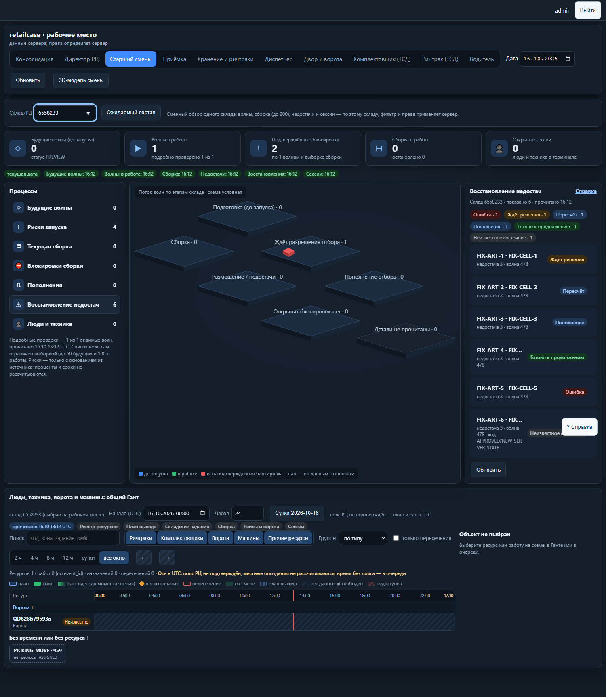

Dev TEST data. Author software verification, no hardware claim.
Original orders:1/1 and25/25. No duplicate stock consumption. Original assembly and identifiers preserved. Both warehouses P/H0.
Full report and retained evidence | SQL review

Positive recovery stages are UI fixtures. Live reads cover empty selection and403.
Hardware pilot, partial subtree delivery and universal nested BOX manifest remain open.